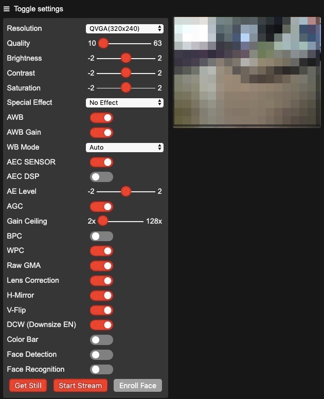

M5cameraはESP32とイメージセンサOV2640が小さいケースに入ったカメラユニットです。 これを上下左右に首の振れるパン・チルト機構に載せて、別のM5Stackのジョイスティックから首振り制御するWebカメラを作ります。
全体の構造はM5cameraを使ったWebカメラと、それを制御するコントローラ、Webカメラの画像を見るブラウザの三つから構成されます。
Webカメラ側は、M5cameraをパン・チルト機構に載せます。M5cameraでWebサーバーを動かし、カメラの映像をブラウザに送ると同時に、コントローラからのリクエストを受けてパン・チルト機構を制御し、自分自身の向きを変えます。
コントローラ側はM5Stackにジョイスティックをつなぎ、ジョイスティックの動きに応じてM5cameraのWebサーバーにパン・チルトを制御するリクエストを送ります。
Webカメラの映像はPCやスマホのブラウザで見ます。
今回使う部品をまとめました。
| 部品 | 個数 |
|---|---|
| M5camera | 1 |
| Pan/Tilt 機構作成キット | 1 |
| M5Stack Basic | 1 |
| M5Stack用ジョイスティックユニット | 1 |
| GROVE - サーボ用2分岐ケーブル (5本セット) | 1 |
M5cameraは4MBフラッシュと4MB PSRAMが搭載されたESP32とイメージセンサOV2640が入ったカメラモジュールです。出荷時期によってピン配置の異なる2バージョンあるようですが、今回使ったのはBモデルです。
M5cameraの出荷時はESP-IDFで作られたサンプルのファームウェアが書き込まれていて、USBケーブルをつなぐとサンプルが動作します。
M5cameraが「M5CAM」というssidのWi-Fiアクセスポイントになり、PCやスマホでそのssidに接続して、ブラウザで「http://192.168.4.1」にアクセスすると画像が流れてきます。
あっけないほど簡単に動作確認できました。
Arduinoにもカメラを制御するサンプルプログラムがあり、M5cameraも制御できるので、Arduinoのサンプルプログラムをベースに開発を進めます。
Arduino IDEのボード選択で「ツール」メニュー→「ボード」で「ESP32 Wrover Module」を選択します。
設定は次のようにします。
「Upload Speed」は921600bpsで書き込むことができます。「Partition Scheme」は「Huge APP (3MB No OTA)」に設定します。
サンプルプログラムがArduino IDEの「ファイル」メニュー→「スケッチ例」→「ESP32」→「Camera」→「CameraWebServer」にあるので、それを選択します。適当なファイル名、例えばM5cameraという名前をつけて保存します。
カメラモデルの設定とssid、password、SIODとVSYNCのピン番号を変更します。SIODとVSYNCのピン番号はAモデルからBモデルになったときに変更されています。サンプルプログラムはAモデルに対応しているので、それをBモデルに合わせて変更します。今後、サンプルプログラムがBモデル対応になれば、SIODとVSYNCのピン番号の変更は不要になります。
10〜11行目
//#define CAMERA_MODEL_WROVER_KIT // コメントを付ける
#define CAMERA_MODEL_M5STACK_PSRAM // コメントを外す
14〜15行目
const char* ssid = "*********"; // 自分のWi-Fiルータのssid
const char* password = "*********"; // 自分のWi-Fiルータのパスワード
41行目
#define SIOD_GPIO_NUM 22 // 25→22に変更
52行目
#define VSYNC_GPIO_NUM 25 // 22→25に変更
ビルドしてM5cameraにダウンロードして、動かしてみます。シリアルモニタには次のような出力が表示されます。
このサンプルプログラムはステーションモードでWi-Fiルータに接続し、Webサーバを立ち上げています。
ブラウザで「http://192.168.11.12」にアクセスすると、次のようなコントロール画面が表れ、一番下の「Get Still」をクリックすると静止が、「Start Stream」をクリックするとストリーム画像が右側に表示されます。

パン・チルト機構は水平方向の回転と縦方向の首振りをおこなう機構とそれを駆動する2個のサーボモーターSG90のキットです。
サーボモーターSG90の主な仕様を示します。
| PWMサイクル | 20m秒 |
| 制御パルス | 0.5m秒～2.4m秒 |
| 制御角 | ±約90° (180°) |
| トルク | 1.8kgf・cm |
| 動作速度 | 0.1秒/60度 |
| 動作電圧 | 4.8V (～５5V) |
サーボモーターSG90はパルス幅でモーター角度を制御します。基本周期が20m秒、つまり50Hzで、パルス幅を0.5m秒にするとモーター角度が-90°に、1.45m秒にすると0°に、2.4m秒にすると+90°になります。こうしたパルス幅での制御をPWM(Pulse Width Modulation: パルス幅変調)といいます。
ESP32 ArduinoでPWMをおこなうにはLEDコントロールライブラリ(ledc)を使います。LEDの明るさを制御するためにパルス幅変調(PWM)が使われるため、ライブラリ名がpwmではなくledcになっているものと思われます。
ledcライブラリは次のように使います。
double ledcSetup(uint8_t channel, double freq, uint8_t resolution_bits);
説明：PWMチャネルを初期設定する
パラメータ：
channel: チャネル。0〜１５。
freq: 周波数
resolution_bits: 分解能(ビット数)
void ledcAttachPin(uint8_t pin, uint8_t channel);
説明：PWMチャネルにピンを割り当てる
パラメータ：
pin: 割り当てるピン番号
channel: チャネル
void ledcWrite(uint8_t channel, uint32_t duty);
説明：PWMチャネルにHIGHになる値を設定する
パラメータ：
channel: チャネル
duty: 出力がHIGHになる期間
チャネルにカウンタがあり、カウンタの最大値が2のresolution_bits乗、つまりresolution_bitsが10なら1023に設定されます。ledcWriteでdutyを設定すると、duty値の分だけ出力がHIGHになります。
SG90は基本周期が20m秒で、0.5m秒HIGHにするとモーター角度が-90°に、2.4m秒で+90°になります。ledcWriteのdutyを26にするとモーター角度を-90°に制御できます。
0.5m秒 / 20m秒 * 1023 ≒ 26 → -90°
2.4m秒 / 20m秒 * 1023 ≒ 123 → +90°
では、M5StackでSG90を制御してみましょう。まずSG90とM5Stackを次のように接続します。
| SG90 | M5Stack |
|---|---|
| PWM(橙) | GPIO2 |
| Vcc(赤) | 5V |
| GND(茶) | G |
次のプログラムをビルドして動かしてみます。
Arduinoのmap関数で-90から90までの値を26から123に比例計算してduty値を求め、ledcWrite関数で設定しています。
プログラムを動かすと、モーターが-90°から90°まで回転するのが確認できます。
SG90の制御はクラスライブラリにしました。
writeメソッドはモーターを指定した角度に回します。SG90はM5cameraのGroveソケットの5Vで駆動します。一つのSG90を連続して動かしても問題ありませんが、二つのSG90を連続して動かすと大きな電流が流れてM5cameraの電圧が下がり、M5cameraがリセットされてしまいます。そこで、前回と別のSG90を動かす時は50m秒間隔をあけています。
plusとminusメソッドは現在の角度から5°増やす、減らすメソッドです。
SG90の動作が確認できたら、組み立てガイドを見ながらパン・チルト機構を組み立てます。台に載せないとパン・チルト機構が転がってしまうので、適当な台に載せます。
パン・チルト機構を組み立てたら、M5cameraをパン・チルト機構に取り付けます。LEGOの足をつける部分が邪魔なので、上下逆さまに取り付けました。
M5camraのGroveソケットにGND、5V、GPIO4、GPIO13が出ているので、それを使ってパン・チルト機構のSG90と次のようにつなぎます。
| M5cameraのGroveソケット | パン・チルト機構 |
|---|---|
| G | ２つのSG90のGND(茶) |
| V | ２つのSG90のVcc(赤) |
| GPIO4 | パン(水平方向)のSG90のPWM(橙) |
| GPIO13 | チルト(縦方向)のSG90のPWM(橙) |
「GROVE - サーボ用2分岐ケーブル」を使う場合、白い線がある方をパン(水平方向)に、黄色い線がある方をチルト(縦方向)に接続します。
サンプルプログラムの「CameraWebServer」に、パン・チルト制御を組み込みます。
「CameraWebServer」はapp_httpd.cppというファイルがWebサーバーとカメラ制御をおこなっています。このファイルでパン・チルト制御をおこなうために、ファイル中でSG90ライブラリのヘッダファイルをインクルードし、パンとチルトを制御するSG90のインスタンスを作ります。
#include "SG90.h"
SG90 pan;
SG90 tilt;
app_httpd.cppでは、startCameraServer関数がこのモジュールの初期化処理で、Webサーバーを起動しています。この関数の最後にパンとチルトを初期化する2行を追加します。カメラの制御にLEDCのチャネル0を使っているので、SG90の制御にチャネル0を使うとカメラが動かなくなってしまいます。それを避けるために、SG90の制御にはチャネル14と15を使いました。
pan.begin(4, 14); // (ピン番号, PWMチャネル)
tilt.begin(13, 15); // (ピン番号, PWMチャネル)
Webカメラをブラウザで制御するとき、Web画面左側の制御部分を操作すると、/controlというURLに対してHTTPリクエストが送られます。例えばWebカメラの画面の上下を反転させるV-Flipというスライダを変更すると、次のようなHTTPリクエストが送られます。
http://{M5cameraのIPアドレス}/control?var=vflip&val=1
そこで、パン・チルト制御をおこなうpantiltというコマンドを追加し、左に振るなら"p+"、右なら”p-"、下に振るなら"t+"、上なら"t-"という文字列を値(val)として渡すことにします。例えばカメラを左上に振るなら次のようなHTTPリクエストを送ります。
http://{M5cameraのIPアドレス}/control?var=pantilt&val=p+t-
/controlに対して送られたHTTPリクエストは、cmd_handlerという関数で処理されます。varにセットした文字列がコマンドとなり、コマンドに応じた処理がおこなわれます。pantiltコマンドを扱うためにcmd_handlerに次の処理を追加しました。
else if (!strcmp(variable, "pantilt")) { // value="p[+,-,0]t[+,-,0]"
if (value[1] == '+') pan.plus(); // 2文字目が'+'ならpan.plus
else if (value[1] == '-') pan.minus(); // '-'ならpan.minusを呼ぶ
if (value[3] == '+') tilt.plus(); // 4文字目が'+'ならtilt.plus
else if (value[3] == '-') tilt.minus(); // '-'ならtilt.minusを呼ぶ
}
プログラム全体はGithubに公開しました。
プログラムをビルドして、動かします。curlコマンドで次のようなHTTPリクエストを送ってみます。
$ curl http://{M5cameraのIPアドレス}/control?'var=pantilt&val=p+t0'
$ curl http://{M5cameraのIPアドレス}/control?'var=pantilt&val=p-t0'
$ curl http://{M5cameraのIPアドレス}/control?'var=pantilt&val=p0t+'
$ curl http://{M5cameraのIPアドレス}/control?'var=pantilt&val=p0t-'
パン・チルト機構が左右、上下に動くのが確認できます。
これでWebカメラ側は完成です。
次はM5Stackにジョイスティックをつなぎ、Webカメラを制御するコントローラを作ります。
今回使うM5Stack用ジョイスティックユニットは、レバーを動かすとそれに応じてx軸、y軸の抵抗値が変化します。M5StackとはI2C通信で通信し、値を読むと、その瞬間のx軸、y軸の抵抗値の値が読めます。そこで、初期化時にレバーを動かしていないときのx軸、y軸の抵抗値を読んで、基準値を求め、基準値よりも抵抗値が大きければ1を、小さければ-1を返す関数x()とy()を作りました。ジョイスティック制御もライブラリ化しました。
コントローラのプログラムは、setup関数でWi-Fiネットワークに接続し、loop関数でジョイスティックのxとyの値を調べ、xが基準値より大きければ"p+"、小さければ"p-"、yが基準値より大きければ"t+"、小さければ"t-"というコマンドを作り、WebカメラにHTTPで送信しています。
プログラムはGithubに公開しました。M5cameraのプログラムを動かした時に表示されるIPアドレスをm5camera_ipaddrに設定します。
M5cameraのWebカメラとM5Stackのコントローラを動かして、M5StackのジョイスティックでWebカメラを制御してみました。
多少、動きがぎくしゃくしていますが、ジョイスティックでM5cameraの向きを制御できました。
簡単な部品の組み合わせで、実際に「物理的に」動くモノが作れるのはとても楽しいですね。
この記事はアンビエントデーターの下島が担当しました。